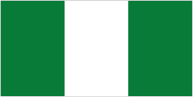

AFRICAN COUNTRIES
NIGERIA
nigeria flag
Nigeria republic in western Africa, with a coast along the Atlantic Ocean on the Gulf of Guinea. Most of Nigeria consists of a low plateau cut by rivers, especially the Niger and itslargest tributary, the Benue. The country takes its name from its chief river. Until 1991, the capital was the largest city, Lagos on the southwestern coast; at that time, the city of Abuja in the country's interior became capital. Equatorial Guinea and on the west by the Bight if Biafra (an arm of the Atlantic Ocean) and Nigeria. The country is shaped like an alongated triangle, and forms a bridge between West Africa and Central Africa. The country has a total area of 475,442sq km (183,569sq mi) Yaounde is the capital and Douala is the largest city.